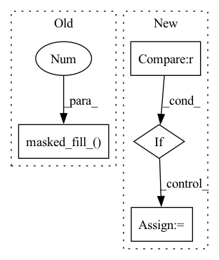

Pattern ID :13010

Before Change
prob_t = log_prob_t.exp()
losses = -log_prob_t * torch.pow(1 - prob_t, gamma)
losses.masked_fill_(target==ignore_index, 0)
return _reduce_losses(losses, reduction)
After Change
----------
[1] Lin et al. (2017). Focal Loss for Dense Object Detection. ICCV 2017.
if weight is None:
sample_weight = (target != ignore_index).type(torch.float)
else:
sample_weight = weight.gather(dim=0, index=target) * (target != ignore_index).type(torch.float)
In pattern: SUPERPATTERN
Frequency: 3
Non-data size: 4
Instances
Fragment ID: 44008399
Project Name: syuoni/eznlp
Commit Name: 6c21298e53d2743f23f8ce908349372fe4e9c1e8
Time: 2021-05-10
Author: enwei.zhu@outlook.com
File Name: eznlp/nn/functional.py
M Class Name: AnonimousClass
N Class Name: AnonimousClass
M Method Name: focal_loss(6)
N Method Name: focal_loss(6)
M Parent Class:
N Parent Class:
M File Name: eznlp/nn/functional.py
N File Name: eznlp/nn/functional.py
M Start Line: 206
M End Line: 217
N Start Line: 218
N End Line: 230
'>
Before Change
1 - epsilon,
epsilon / (logits.size(dim=-1) - 1))
losses = soft_label_cross_entropy(logits, smooth_target, weight=weight, reduction="none")
losses.masked_fill_(target==ignore_index, 0)
return _reduce_losses(losses, reduction)
def focal_loss(logits: torch.Tensor, target: torch.LongTensor,
After Change
weight : torch.Tensor (logit_dim, )
A manual rescaling weight given to each class.
if weight is None:
sample_weight = (target != ignore_index).type(torch.float)
else:
sample_weight = weight.gather(dim=0, index=target) * (target != ignore_index).type(torch.float)
'>
Fragment ID: 44008395
Project Name: syuoni/eznlp
Commit Name: 6c21298e53d2743f23f8ce908349372fe4e9c1e8
Time: 2021-05-10
Author: enwei.zhu@outlook.com
File Name: eznlp/nn/functional.py
M Class Name: AnonimousClass
N Class Name: AnonimousClass
M Method Name: smooth_label_cross_entropy(6)
N Method Name: smooth_label_cross_entropy(6)
M Parent Class:
N Parent Class:
M File Name: eznlp/nn/functional.py
N File Name: eznlp/nn/functional.py
M Start Line: 179
M End Line: 184
N Start Line: 182
N End Line: 195
'>
Before Change
out = x.clone()
out.masked_fill_(k == 0, 1)
if k.max() > 1:
mask = k == 2
out[..., mask] *= out[..., mask]
After Change
out = x.clone()
if mask0 is None:
mask0 = k == 0
out.masked_fill_(mask0, 1)
'>
Fragment ID: 44008400
Project Name: nlesc-jcer/qmctorch
Commit Name: 98a99b62b539293ba141a9b4591dbcd1332b9b73
Time: 2020-05-21
Author: nicolas.gm.renaud@gmail.com
File Name: qmctorch/utils/torch_utils.py
M Class Name: AnonimousClass
N Class Name: AnonimousClass
M Method Name: fast_power(4)
N Method Name: fast_power(2)
M Parent Class:
N Parent Class:
M File Name: qmctorch/utils/torch_utils.py
N File Name: qmctorch/utils/torch_utils.py
M Start Line: 18
M End Line: 33
N Start Line: 18
N End Line: 39